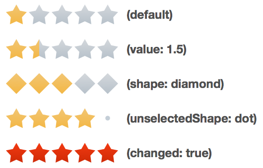

| Oracle Fusion Middleware Data Visualization Tools Tag Reference for Oracle ADF Faces 12c (12.2.1) E52773-01 |
dvt:ratingGauge ratingGauge rating gauge
UIComponent class: oracle.adf.view.faces.bi.component.gauge.UIRatingGauge
Component type: oracle.dss.adf.gauge.RatingGauge

A gauge displaying and optionally accepting input for a metric value. The rating gauge is commonly used to show ratings for products or services, such as the star rating for a movie.
<dvt:ratingGauge value="3" readOnly="false"/>
Visual effects such as gradients and overlays can be disabled to achieve a flatter look using the visualEffects attribute.
Popups and context menus can be displayed using af:showPopupBehavior.
The readOnly attribute can be set to false enabling the end user to change the metric value of the gauge. The value change can be processed using valueChangeListener on the server or the valueChange and input event types on the client.
| Type | Phases | Description |
|---|---|---|
| org.apache.myfaces.trinidad.event.AttributeChangeEvent | Invoke Application, Apply Request Values |
Event delivered to describe an attribute change. Attribute change events are not delivered for any programmatic change to a property. They are only delivered when a renderer changes a property without the application's specific request. An example of an attribute change event might include the width of a column that supported client-side resizing. |
| Name | Type | Supports EL? | Description |
|---|---|---|---|
| action | javax.el.MethodExpression | Yes | A reference to an action method sent by the component, or the static outcome of an action. |
| actionListener | javax.faces.el.MethodBinding | Only EL | A method reference to an action listener |
| attributeChangeListener | javax.el.MethodExpression | Only EL | a method reference to an attribute change listener. Attribute change events are not delivered for any programmatic change to a property. They are only delivered when a renderer changes a property without the application's specific request. An example of an attribute change events might include the width of a column that supported client-side resizing. |
| binding | oracle.adf.view.faces.bi.component.gauge.UIRatingGauge | Only EL |
Specifies a binding reference to store a specific instance of UIRatingGauge from a backing bean. Set this attribute only to access code in a backing bean. For example, to reference a gauge component in the sample managed bean, use the following code: |
| changed | boolean | Yes | Default Value: false Specifies whether the value of the gauge has already been set by the user. |
| changedStyle | String | Yes | Style of the changed shapes. Can specify color and border-color. |
| emptyText | String | Yes | The text of the component when empty. |
| hoverStyle | String | Yes | Style on hover. Can specify color and border-color. |
| id | String | No | Specifies the identifier for the component |
| inlineStyle | String | Yes | Style of the outer element (enclosing div) of the component |
| inputIncrement | String | Yes | Valid Values: full, half Default Value: full Specifies the change increment when editing the value. |
| maximum | Number | Yes | The maximum value for the gauge. |
| minimum | Number | Yes | The minimum value for the gauge. |
| partialTriggers | String[] | Yes | The IDs of the components that should trigger a partial update. This component will listen on the trigger components. If one of the trigger components receives an event that will cause it to update in some way, this component will request to be updated too. |
| readOnly | boolean | Yes | Default Value: true Specifies whether the value of the gauge can be changed by the end user. |
| rendered | boolean | Yes | Default Value: true Specifies whether the component is rendered. |
| selectedStyle | String | Yes | Style of the selected shapes. Can specify color and border-color. |
| shape | String | Yes | Valid Values: circle, diamond, rectangle, star, triangle Default Value: star Specifies the shape of the rating gauge increments. |
| shortDesc | String | Yes | The short description of this component. This is used to customize the tooltip text. |
| styleClass | String | Yes | Sets a CSS style class to use for this component. |
| unselectedShape | String | Yes | Valid Values: auto, none, circle, diamond, dot, rectangle, star, triangle Default Value: auto Specifies the shape of the unselected rating gauge increments. Defaults to the value of the shape attribute. |
| unselectedStyle | String | Yes | Style of the unselected shapes. Can specify color and border-color. |
| value | Number | Yes | The metric value for the gauge. |
| valueChangeListener | javax.el.MethodExpression | Only EL | A method reference to a value change listener |
| visualEffects | String | Yes | Valid Values: none, auto Default Value: auto Specifies whether visual effects such as gradients and overlays are enabled. |